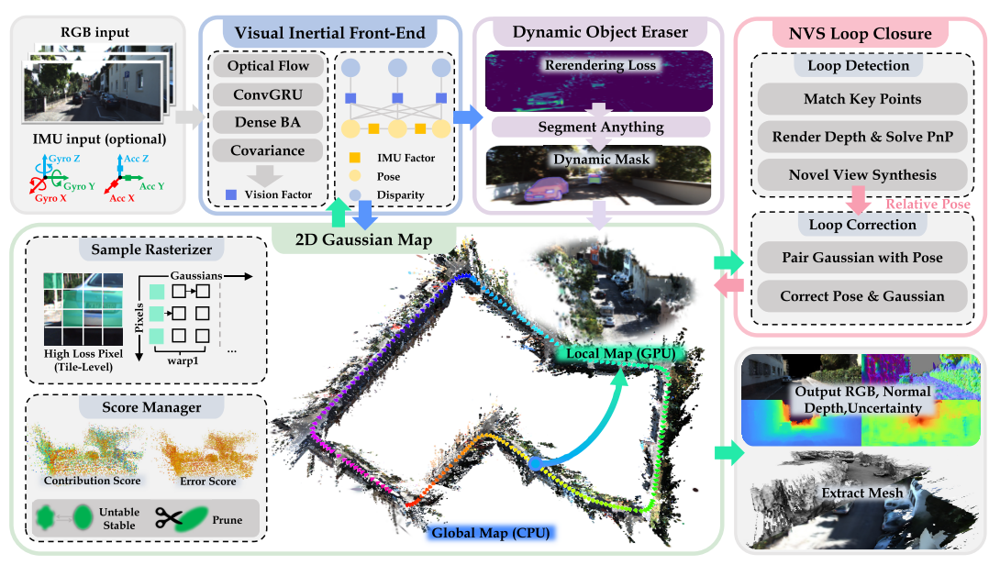
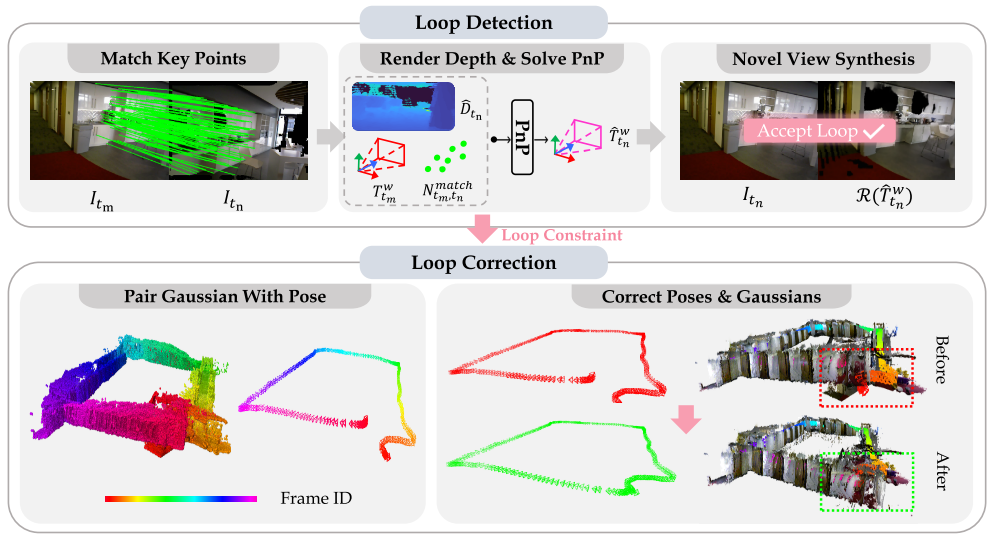

Visual-Inertial Gaussian Splatting (VINGS-MONO) is a novel approach to monocular SLAM that combines the power of Gaussian Splatting with visual-inertial odometry. Our system achieves state-of-the-art performance in both indoor and outdoor environments, with particular strength in handling large-scale scenes.

We propose a novel Gaussian Splatting based loop detection and correction method. Instead of using the Bag of Words (BoW) approach for loop detection, we leverage the novel view synthesis capabilities of gaussian
splatting from new viewpoints to determine if a loop has been detected. Following this, we use graph optimization to correct poses and use gaussians' frame index to correct the 2D Gaussian Map.
